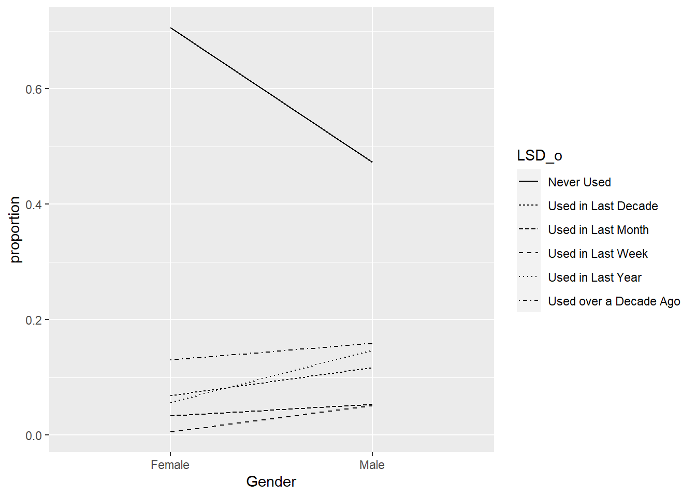

Chapter 9 2) Modeling the Average Claim Payout
9.1 a. (3 points) In this problem we will focus on modeling the positive continuous variable “AvgClaimAmount.” Attempt to fit a Gamma regression with a log link, predicting AvgClaimAmount as a function of all feature variables in the dataset. What happens when you attempt to fit this model?
The model cannot run since 0 is not positive value.
9.2 b. (5 points) Create a new dataset consisting of the rows that correspond to strictly positive realizations of AvgClaimAmount. Make a histogram of this variable on standard and log scale and describe your findings.
#??? do I need to bin it?
#42:
hist(Insurance$AvgClaimAmount[Insurance$AvgClaimAmount>0])hist(log(Insurance$AvgClaimAmount[Insurance$AvgClaimAmount>0]))
The distribution is highly skewed to the right.
Once I use the log scale, it is more normally distributed.
9.3 c. (4 points) Fit the Gamma regression proposed in part a to the filtered dataset. Do you notice anything strange? How many iterations did it take glm() to find this result?
# how to stop the code from running when it is stuck???
# run the gamma
Insurance_GammaGLM <- glm(AvgClaimAmount ~ .,
family = Gamma(link = log),data = Insurance_filter)
#summary(Insurance_GammaGLM)$dispersionIt only shows not converged, so I am not sure how many iterations.
9.4 d. (3 points) To the glm() function, add the argument control = list(maxit = 500). What do you think this will do? Fit the model and examine the summary output to check the number of iterations needed for convergence.
# max iteration so that more chance to converge
# run the gamma
Insurance_GammaGLM <- glm(AvgClaimAmount ~ .,
family = Gamma(link = log), control = list(maxit = 900),data = Insurance_filter)
#summary(Insurance_GammaGLM)$dispersionsummary(Insurance_GammaGLM)##
## Call:
## glm(formula = AvgClaimAmount ~ ., family = Gamma(link = log),
## data = Insurance_filter, control = list(maxit = 900))
##
## Deviance Residuals:
## Min 1Q Median 3Q Max
## -16.2061 -0.7292 -0.2798 0.0261 6.3709
##
## Coefficients: (1 not defined because of singularities)
## Estimate Std. Error t value Pr(>|t|)
## (Intercept) 6.281e+00 3.920e-01 16.024 < 2e-16 ***
## ClaimNb 1.477e-01 1.419e-01 1.041 0.298012
## Exposure -4.400e-01 1.095e-01 -4.020 6.01e-05 ***
## AreaB -3.133e-01 1.453e-01 -2.155 0.031237 *
## AreaC -2.948e-01 1.932e-01 -1.526 0.127122
## AreaD -6.100e-01 2.942e-01 -2.074 0.038213 *
## AreaE -8.155e-01 3.902e-01 -2.090 0.036733 *
## AreaF -1.277e+00 5.543e-01 -2.304 0.021300 *
## VehPower5 4.092e-02 1.078e-01 0.380 0.704202
## VehPower6 1.642e-01 1.031e-01 1.593 0.111316
## VehPower7 -3.993e-02 1.024e-01 -0.390 0.696563
## VehPower8 -4.833e-02 1.577e-01 -0.306 0.759321
## VehPower9 -7.725e-03 1.616e-01 -0.048 0.961883
## VehPower10 1.492e-01 1.759e-01 0.848 0.396438
## VehPower11 3.790e-01 2.410e-01 1.573 0.115900
## VehPower12 3.186e-01 3.310e-01 0.963 0.335823
## VehPower13 1.404e-01 4.039e-01 0.348 0.728199
## VehPower14 -1.058e+00 8.402e-01 -1.259 0.208276
## VehPower15 4.558e-01 5.979e-01 0.762 0.445974
## VehAge -2.100e-02 6.551e-03 -3.206 0.001363 **
## DrivAge 5.308e-03 2.390e-03 2.221 0.026466 *
## BonusMalus 6.340e-03 1.742e-03 3.640 0.000279 ***
## VehBrandB10 2.010e-02 1.998e-01 0.101 0.919877
## VehBrandB11 2.283e-01 2.390e-01 0.955 0.339649
## VehBrandB12 -1.283e-01 1.433e-01 -0.895 0.370723
## VehBrandB13 3.616e-01 2.233e-01 1.619 0.105495
## VehBrandB14 2.590e-01 3.274e-01 0.791 0.429056
## VehBrandB2 1.433e-02 7.957e-02 0.180 0.857078
## VehBrandB3 -1.154e-01 1.088e-01 -1.061 0.288934
## VehBrandB4 -1.700e-01 1.473e-01 -1.154 0.248656
## VehBrandB5 1.191e-01 1.303e-01 0.914 0.360851
## VehBrandB6 -3.775e-02 1.352e-01 -0.279 0.780187
## VehGasRegular -3.469e-03 6.661e-02 -0.052 0.958473
## Density 1.588e-01 7.322e-02 2.169 0.030185 *
## RegionR21 3.089e-02 6.579e-01 0.047 0.962553
## RegionR22 1.837e-02 2.976e-01 0.062 0.950778
## RegionR23 7.812e-02 5.007e-01 0.156 0.876032
## RegionR24 1.612e-01 1.583e-01 1.018 0.308649
## RegionR25 -2.428e-01 2.707e-01 -0.897 0.369889
## RegionR26 -7.689e-02 3.279e-01 -0.234 0.814641
## RegionR31 8.568e-02 2.292e-01 0.374 0.708621
## RegionR41 2.435e-01 2.294e-01 1.062 0.288535
## RegionR42 1.646e-01 3.873e-01 0.425 0.670974
## RegionR43 2.754e-01 1.441e+00 0.191 0.848487
## RegionR52 2.032e-02 1.826e-01 0.111 0.911398
## RegionR53 1.453e-01 1.792e-01 0.811 0.417344
## RegionR54 1.153e-01 2.069e-01 0.557 0.577427
## RegionR72 1.186e-01 2.011e-01 0.590 0.555270
## RegionR73 4.518e-01 3.894e-01 1.160 0.246055
## RegionR74 -2.587e-02 2.827e-01 -0.091 0.927106
## RegionR82 1.446e-01 1.579e-01 0.916 0.359916
## RegionR83 -3.973e-02 6.592e-01 -0.060 0.951941
## RegionR91 3.616e-02 2.471e-01 0.146 0.883662
## RegionR93 4.024e-01 1.743e-01 2.308 0.021073 *
## RegionR94 -3.099e-01 8.420e-01 -0.368 0.712912
## PurePremium 7.572e-06 8.062e-08 93.925 < 2e-16 ***
## Frequency -1.828e-02 3.574e-03 -5.113 3.43e-07 ***
## Predicted_Class -7.639e-01 5.701e-01 -1.340 0.180390
## Predicted_Class_NB NA NA NA NA
## ---
## Signif. codes: 0 '***' 0.001 '**' 0.01 '*' 0.05 '.' 0.1 ' ' 1
##
## (Dispersion parameter for Gamma family taken to be 2.03893)
##
## Null deviance: 3615.1 on 2313 degrees of freedom
## Residual deviance: 2588.4 on 2256 degrees of freedom
## AIC: 38837
##
## Number of Fisher Scoring iterations: 776I set the iterations maximum to be 900 since it used 777 iterations to get a converge.
9.5 e.(3 points) From the model in e. Interpret the parameter estimate for a vehicle’s age
data.frame(exp.coef = exp(coef(Insurance_GammaGLM)))## exp.coef
## (Intercept) 534.4196081
## ClaimNb 1.1592162
## Exposure 0.6440270
## AreaB 0.7310581
## AreaC 0.7446964
## AreaD 0.5433356
## AreaE 0.4424387
## AreaF 0.2788054
## VehPower5 1.0417724
## VehPower6 1.1785087
## VehPower7 0.9608558
## VehPower8 0.9528167
## VehPower9 0.9923051
## VehPower10 1.1609080
## VehPower11 1.4608336
## VehPower12 1.3752012
## VehPower13 1.1507308
## VehPower14 0.3472931
## VehPower15 1.5773632
## VehAge 0.9792145
## DrivAge 1.0053219
## BonusMalus 1.0063602
## VehBrandB10 1.0203055
## VehBrandB11 1.2564385
## VehBrandB12 0.8795597
## VehBrandB13 1.4355945
## VehBrandB14 1.2955724
## VehBrandB2 1.0144353
## VehBrandB3 0.8909914
## VehBrandB4 0.8436909
## VehBrandB5 1.1264397
## VehBrandB6 0.9629577
## VehGasRegular 0.9965371
## Density 1.1721185
## RegionR21 1.0313717
## RegionR22 1.0185448
## RegionR23 1.0812541
## RegionR24 1.1748965
## RegionR25 0.7844376
## RegionR26 0.9259918
## RegionR31 1.0894601
## RegionR41 1.2757077
## RegionR42 1.1788812
## RegionR43 1.3169937
## RegionR52 1.0205296
## RegionR53 1.1564304
## RegionR54 1.1222285
## RegionR72 1.1259434
## RegionR73 1.5711734
## RegionR74 0.9744611
## RegionR82 1.1555542
## RegionR83 0.9610479
## RegionR91 1.0368235
## RegionR93 1.4954198
## RegionR94 0.7335559
## PurePremium 1.0000076
## Frequency 0.9818884
## Predicted_Class 0.4658244
## Predicted_Class_NB NAAs the vehicle’s age increases, the claim amount decreases by 3%.
#??? Not make sense? how could the older car requires less claim? new car costs more to repair?